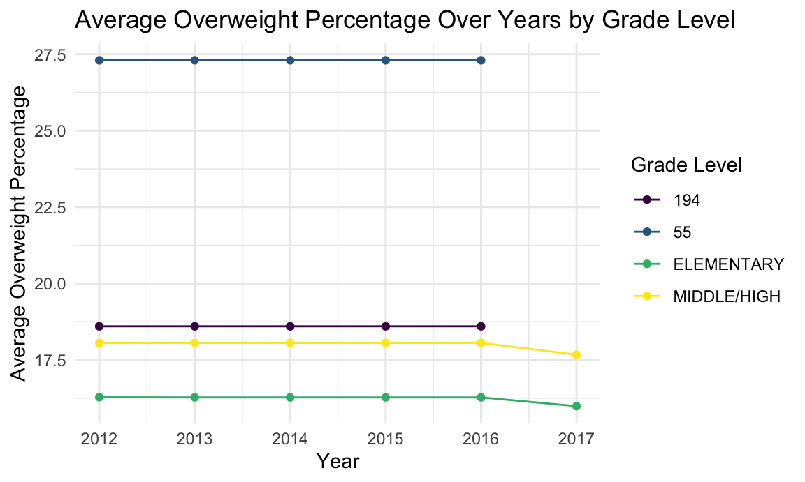
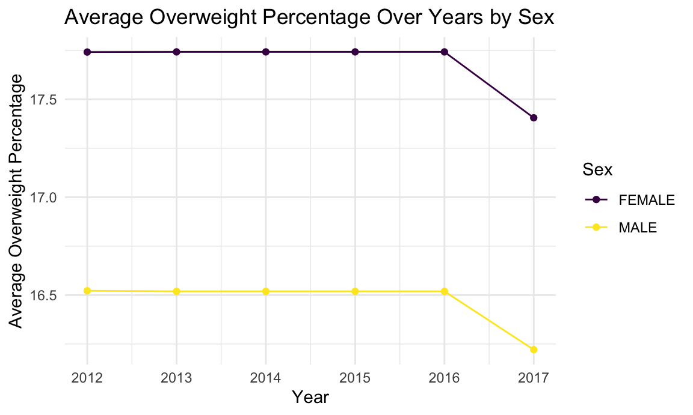
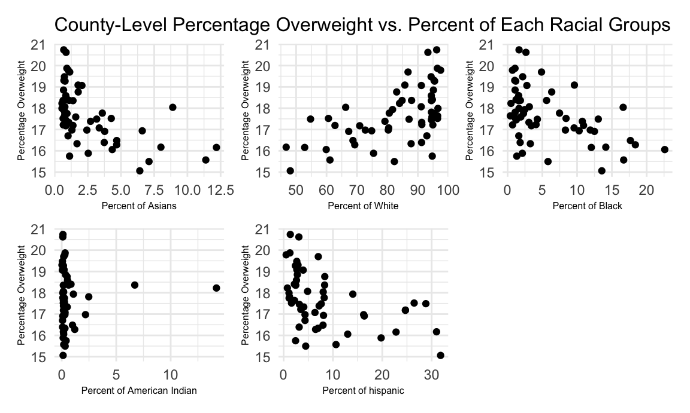

The motivation for our project is to conduct a comprehensive analysis to understand the multifactorial dimensions of New York state student health, specifically relating to obesity and overweight prevalence. Our project will seek to establish correlations between student gender groups, grade levels, demographic variables, and weight status to better understand the impact of social determinants on student health outcomes. Insights gained from this analysis will be instrumental in informing public health interventions, educational policies, and community-based programs to promote healthier lifestyles and address the obesity epidemic in New York state.
Our project will develop a web platform designed for the exploration of intrinsic connections between the weight status of New York state students and their demographic characteristics. A multifaceted correlation analysis will be conducted to comprehensively analyze each demographic variable, including causal inferences, regression analyses, and hypothesis testing. Subsequently, the outcomes will be presented in the form of interactive graphs and tabulated data for enhanced accessibility and clarity. Furthermore, a narrated screencast will provide an intuitive overview of the final product, offering an in-depth understanding of the research findings and their implications.
We want to look at the county-level overweight percentage changes over years to check if there is a change as time goes by, so we employed visualizations to examine the trends in average overweight percentages among New York State students from 2015 to 2019. We do that by calculating the county-level average overweight percent and plot results as a spaghetti plot. Legends are dropped to help visualization.
The percentage of students classified as overweight in the state of New York remained relatively constant from 2015 to 2019. Despite apparent fluctuations in the depicted data, such as a surge in 2016 and a drop in 2017, these variations can be attributed to the confined range of the y-axis. Specifically, the values fluctuate within a limited span, ranging only between 16.7% and 17.3%.
| county | ave_overweight_percent |
|---|---|
| LEWIS | 21.60417 |
| ESSEX | 20.17059 |
| ALLEGANY | 19.24091 |
| OSWEGO | 19.02717 |
| CHEMUNG | 18.92000 |
| county | ave_obese_percent |
|---|---|
| OSWEGO | 24.81957 |
| FRANKLIN | 24.46136 |
| ST. LAWRENCE | 23.94835 |
| YATES | 23.42500 |
| CHENANGO | 22.98594 |
| county | ave_healthy_percent |
|---|---|
| WESTCHESTER | 69.34448 |
| SCHUYLER | 69.32857 |
| TOMPKINS | 67.35893 |
| PUTNAM | 66.51875 |
| SARATOGA | 66.34691 |
This county-level analysis highlighted regions with notably high overweight and obese percentages, pinpointing areas such as Oswego County for potential targeted interventions. It is recommended that educational and health authorities explore counties ranked high in student overweight percentage to glean insights on effectively managing this situation by policy making.
We also want to look at the change of the percent of overweight students in two different grade levels to guide our variable selection process in later regression model fitting step. 
Our visual comparisons between elementary and middle school students across counties indicated a general trend of higher overweight percentages among middle school students, which tells us that this variable is a fair choice to be included in our prediction model.
Next, we want to see if sex affects students’ overweight percentage for each school district over the five years of data record. 
The plot indicates that the likelihood of female students having a higher percentage of overweight cases compared to male students is noticeable. This pattern may be influenced by a complex interplay of biological, behavioral, and socio-cultural factors. For instance, hormonal differences between males and females can affect the distribution of muscle and fat in their bodies.
Lastly, we want to examine the association between the number of five different student racial groups in each district with the average percentage of overweight students in that district. Upon reviewing the cleaned data, there is a hypothesis that various racial groups may exhibit distinct probabilities of experiencing overweight conditions. Therefore, our analysis will commence by examining the distribution of different racial groups among students for each year.
The pie charts reveal that approximately 60% of the student population is white, while around 20% identifies as Hispanic. There are smaller proportions of Asian, American Indian, and Black students.
Following this, we generate scatter plots to visualize the county-level average distribution of racial groups and the corresponding average percentage of overweight individuals to guide out variable selection in linear models.

In the five scatterplots presented above, a noticeable trend emerges where an increase in the percentage of Asian, Black, and Hispanic students is associated with a decrease in the percentage of overweight individuals. Conversely, there appears to be no distinct relationship between the percentage of American Indian students and the percentage overweight. Notably, as the percentage of White students increases, there seems to be an upward trend in the percentage of overweight individuals. This suggests a potential positive correlation between the number of White students and the percentage of overweight individuals. To delve deeper into this relationship, further exploration will be conducted using regression analysis.
Female Students Across Grade Levels
The two-sample t-test revealed a statistically significant difference in the mean log number of overweight female students between elementary and middle/high schools. Elementary schools exhibited a higher mean, suggesting a greater prevalence of overweight conditions among younger female students.
Male Students Across Grade Levels
A similar pattern was observed in male students. The t-test showed a significant difference between elementary and middle/high school male students, with higher mean log numbers of overweight students in elementary schools.
Elementary Students Across Sex Groups
In elementary schools, the t-test indicated no significant difference in the mean log number of overweight students between male and female groups, suggesting similar overweight prevalence across genders at this educational level.
Middle/High School Students Across Sex Groups
For middle/high school students, the t-test also found no significant difference in overweight prevalence between male and female students, highlighting comparable conditions across genders in older student groups.
This model demonstrated a significant influence of sex on the percentage of overweight students. Male students were found to have a lower percentage of overweight cases than female students, as indicated by the model’s negative coefficient for sex, which corresponds to the visualization we conduct in the earlier section.
The regression analysis assessing the impact of grade level on overweight percentages revealed that middle/high school students had a higher percentage of overweight students compared to elementary students. This finding suggests that older students are more prone to overweight conditions.
Combining sex and grade level in an MLR model, both factors were shown to significantly influence the percentage of overweight students. This model provided a more comprehensive understanding than the individual SLR analyses.
This model analyzed the relationship between student demographics and overweight percentages at the district level. It highlighted a significant but small association between racial composition and overweight percentages, with certain racial groups more affected than others.
The analysis of the relationship between different weight statuses and the percentage of overweight students showed a very small and statistically insignificant effect of the percentage of healthy weight students on the percentage of overweight students. This points to the complexity of factors influencing overweight prevalence.
The model examining the association between types of lunch and overweight percentages suggested a potential relationship. However, the lack of statistically significant findings indicates the need for further investigation into how nutritional factors contribute to student weight status.
The comprehensive analysis of student health data in New York State has yielded several key insights into the factors influencing the prevalence of overweight and obesity among students. These insights are critical for shaping effective public health strategies and educational interventions.
Impact of Demographic Factors
Our findings highlight the significant role of demographic factors such as sex and grade level in influencing overweight and obesity rates among students. The distinct patterns observed across different grade levels and between male and female students underscore the need for targeted health initiatives that are sensitive to these demographic nuances.
Role of Socio-Cultural Factors
The association between racial composition and overweight percentages, although statistically significant, revealed small effect sizes. This suggests that while racial and socio-cultural factors play a role in student health outcomes, their practical impact might be limited. This calls for a deeper exploration into the complex interplay of socio-cultural dynamics and health behaviors.
Limitations and Future Research Directions
It’s important to note the limitations inherent in our study, particularly the observational nature of the data which restricts our ability to draw causal inferences. Future research, possibly incorporating longitudinal studies and experimental designs, could provide more definitive insights into the causal factors influencing student health.
Implications for Policy and Practice
The study’s findings have important implications for public health policies and school-based health programs. Tailoring interventions to address the specific needs of different student groups, particularly considering age and gender, could be more effective in mitigating overweight and obesity issues. Additionally, integrating an understanding of socio-cultural influences into health promotion strategies could enhance their effectiveness and inclusivenss.
Comprehensive Approach to Student Health
Ultimately, our analysis points to the necessity of a multifaceted approach in addressing the overweight and obesity epidemic among students. This approach should combine public health interventions, educational policies, and community-based programs, all tailored to the unique needs and backgrounds of the student population.